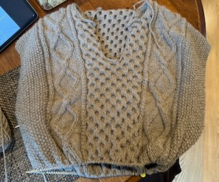

My focus in the major is visual design, and my hobbies tend to reflect this interest in the visual arts. I enjoy drawing and knitting in my free-time. I also like to play games! Below is a photo of the sweater I'm currently working on.

When I first started knitting, I spent a lot of time researching and learning about fiber choice. Since then, through making various projects and trying different types, I've learned more about my preferences and why I like them.
I try to take into account price, fiber content, and overall feel of the yarns I buy. I like to browse local yarn stores and feel how different yarns feel, how their dyes appear in person, and familiarize myself with the yardage per gram. From there (because those yarns are especially pricey), I find yarns that match these preferences online that offer somewhat cheaper alternatives.